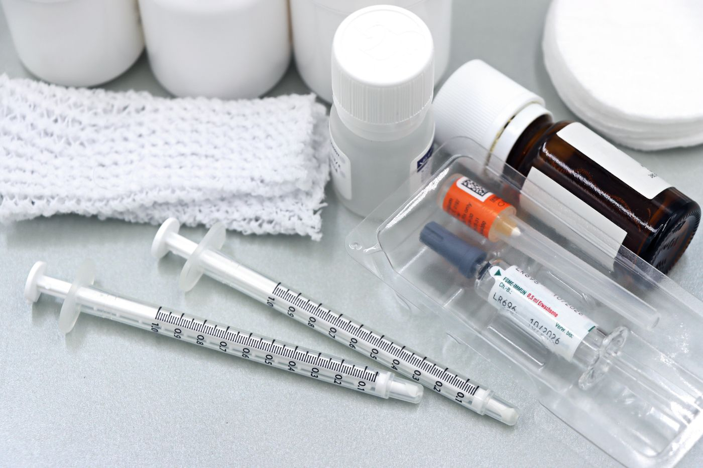

気道確保カニューレメーカー
確かな気道確保を、
すべての医療現場へ。
サンコウメディックス株式会社は、気道確保カニューレの開発・製造を主軸とする医療機器メーカーです。 臨床現場の声をもとに、安全性と装着性を追求した製品づくりを行っています。
30年以上
医療機器製造の実績
15サイズ
豊富なサイズ展開
ISO13485
品質マネジメント認証
24時間
サポート体制
MEDICAL ISSUE
医療現場が抱える、気道確保の課題
患者ごとの体格差
気道の太さや形状は患者によって大きく異なり、画一的な製品では適合しないケースがあります。
装着時の負担
処置の迅速さが求められる一方、装着時の患者への負担や医療従事者の手技負担も軽視できません。
長期留置時の安全性
長期間の留置が必要な場合、粘膜への刺激や閉塞リスクへの対策が求められます。

FEATURES
サンコウメディックスの気道確保カニューレが選ばれる理由
安全性を重視した設計
粘膜への負担を抑える先端形状と素材選定により、留置時の安全性向上を追求しています。
豊富なサイズ展開
新生児から成人まで対応する幅広いサイズラインナップで、患者ごとの最適な選択を可能にします。
迅速な装着性
緊急時にも対応できるよう、手技に不慣れな環境でも扱いやすい構造を採用しています。
徹底した品質管理
ISO13485に準拠した品質マネジメント体制のもと、全製品を一貫して自社工場で製造しています。
PRODUCT LINEUP
製品ラインナップ
スタンダード
SKM-スタンダードカニューレ
幅広い症例に対応する標準タイプ。安定した気道確保と扱いやすさを両立。
- サイズ：新生児〜成人
- 素材：医療用シリコーン
- 単回使用
ロングタイプ
SKM-ロングステイカニューレ
長期留置に配慮した低刺激設計。粘膜への負担軽減を目指したカフ構造を採用。
- サイズ：小児〜成人
- 素材：医療用シリコーン（低刺激）
- 長期留置対応
緊急対応
SKM-クイックカニューレ
救急・災害医療の現場を想定し、迅速な装着を実現するシンプル構造。
- サイズ：成人向け汎用
- 素材：医療用シリコーン
- 単回使用
※ 製品名・仕様は一例です。詳細な仕様書・添付文書はお問い合わせフォームよりご請求ください。
COMPANY
会社概要
| 会社名 | サンコウメディックス株式会社 |
|---|---|
| 事業内容 | 気道確保カニューレをはじめとする医療機器の開発・製造・販売 |
| 所在地 | 〈本社所在地をご記入ください〉 |
| 設立 | 〈設立年月をご記入ください〉 |
| 代表者 | 〈代表者名をご記入ください〉 |
| 認証 | ISO13485（医療機器品質マネジメントシステム） |